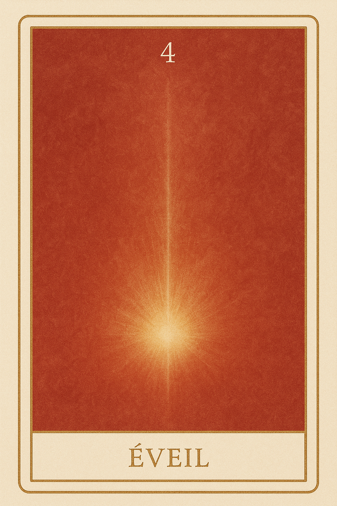
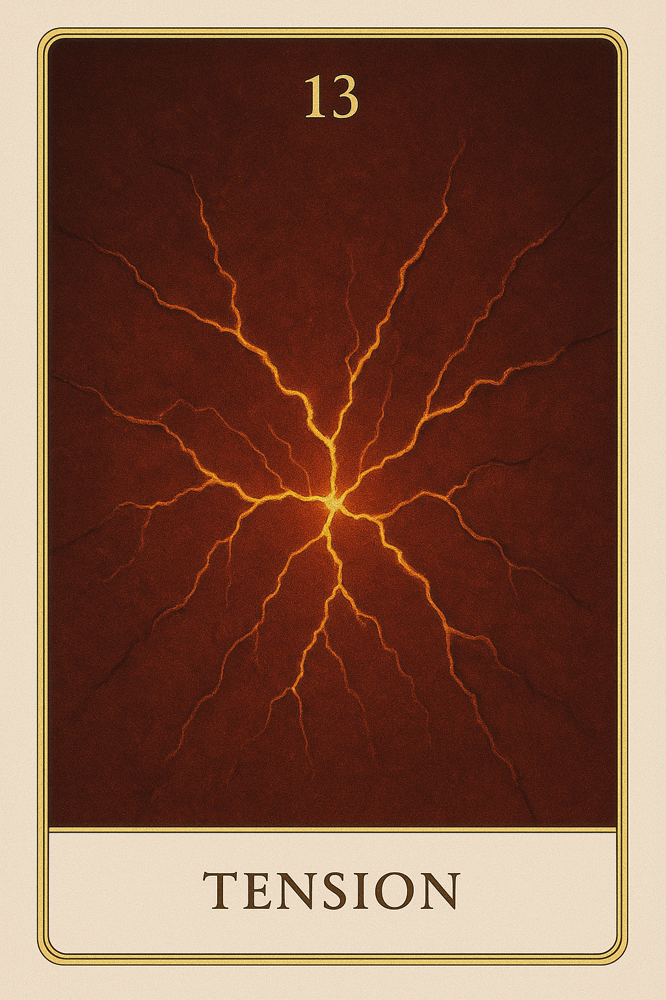
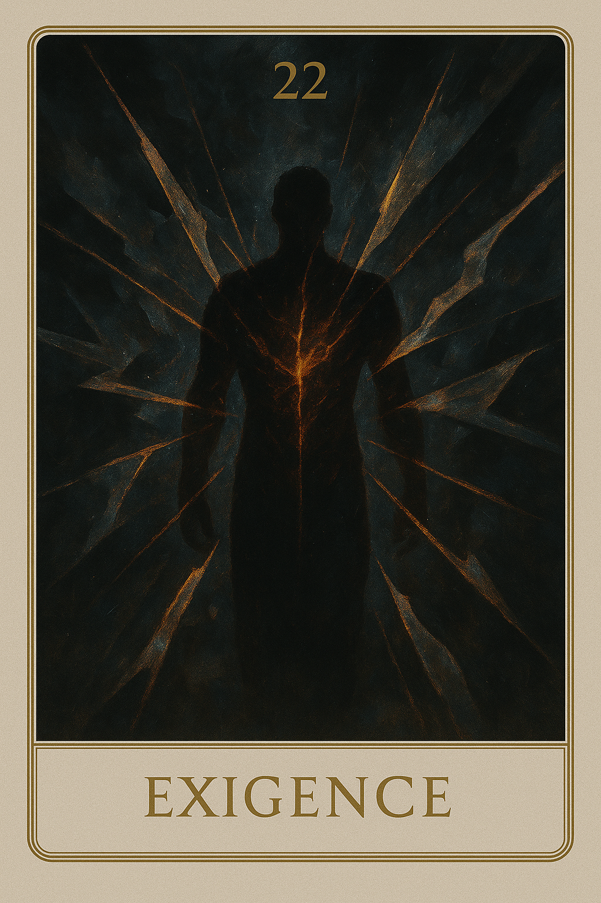
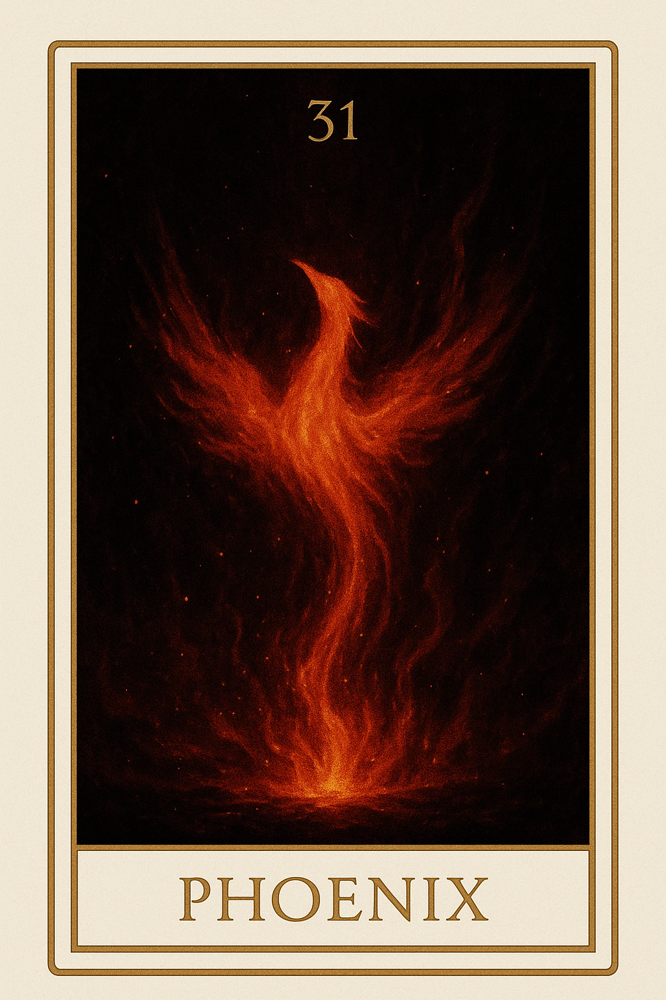
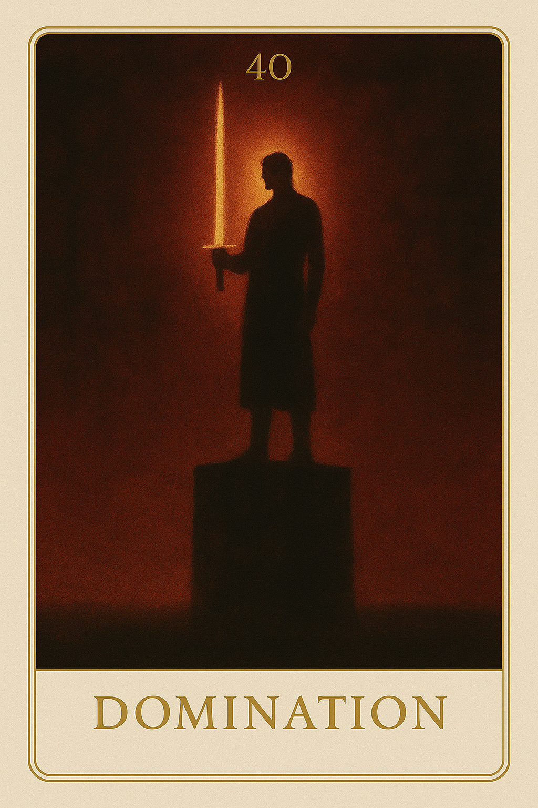
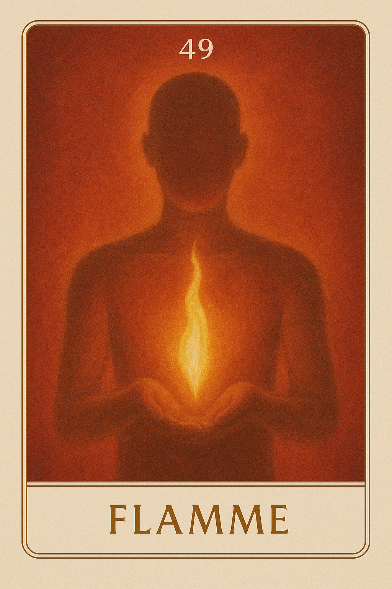
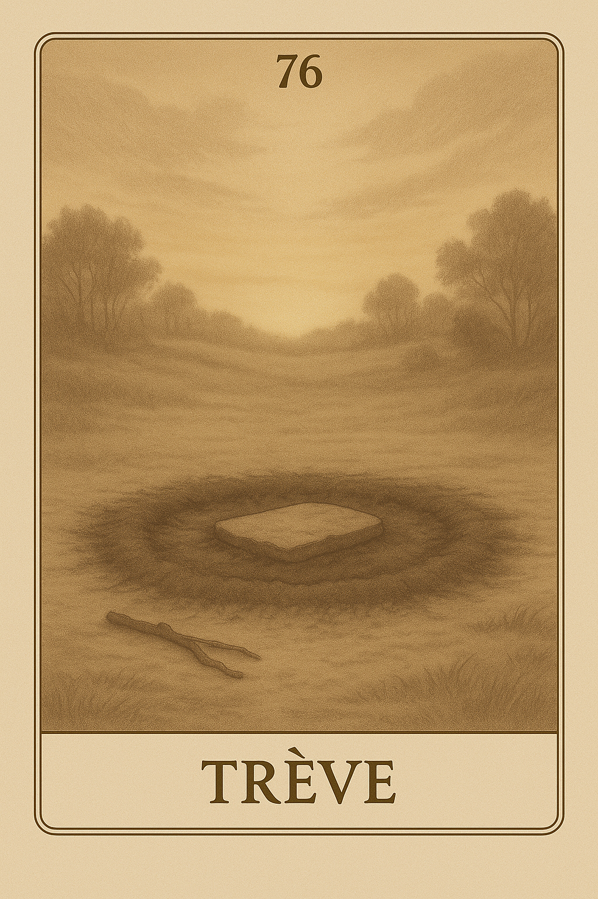

Famille 4 – Sekhmet (Mars)
La famille 4 de l’oracle Seshat est guidée par Mars et Sekhmet. Elle incarne l’élan brut de l’esprit : la force intérieure, les colères enfouies, les actes libérateurs. Ces cartes explorent les tensions mentales, les impulsions qui bousculent l’ordre établi, et les passages obligés entre contrôle et expression.
Carte 4 – Eveil
Mots-clés : éveil intérieur, émotion naissante, ressenti profond, transformation émotionnelle
Chiffre caché : 175
Lecture inversée : 5 → 7 → 1
Divinité principale : Sekhmet
Planète secondaire : Soleil
Divinité secondaire : Râ
Interprétation de la carte 4 : Eveil (droite)
Lecture intuitive rapide
Quelque chose s’agite en toi. Tu ne sais pas encore si c’est de la peur, de la colère, ou un simple élan vital. Mais ce que tu ressens t’oblige à te regarder autrement. C’est le premier appel du dedans — brut, direct, sans forme. L’émotion naît, non comme un obstacle, mais comme un signal d’existence. Sois-tu l’écoutes, sois-tu la fuis. Mais dans les deux cas, elle marque un passage. Un point où le silence intérieur cède, et où la conscience se tend vers ce qu’elle n’avait jamais senti.
1. Caractère de la personne
Une partie de toi commence à bouger. Ce n’est pas encore une réaction, mais une vibration. Tu sens que quelque chose te traverse, que le calme se fend. C’est un moment à écouter : il ne dit pas ce que tu dois faire, il te montre que tu es vivant.
2. Plan affectif
Tu ressens avant d’aimer. Il n’y a pas encore de lien, mais un appel au dedans. Ce n’est ni confort ni douleur, juste une tension douce, qui prépare à l’ouverture — ou à la fermeture.
5. Plan spirituel
Ton feu intérieur se lève. Il ne brûle pas encore, mais il éclaire. C’est le signal que quelque chose doit être reconnu. Ce n’est pas une réponse : c’est une secousse sacrée.
Carte 4 : Eveil (inversée)
1. Caractère de la personne
Tu refuses ce qui monte. Tu sens que quelque chose bouge, mais tu veux rester immobile. Alors l’émotion s’enkyste, ou explose sans guide. Ce que tu ne veux pas entendre parle malgré toi.
2. Plan affectif
Tu étouffes le ressenti avant qu’il ne devienne lien. Tu crains d’être débordé, alors tu coupes le courant. Mais ce que tu retiens te blesse en silence. Tu n’as pas à aimer — juste à sentir que tu es touché.
5. Plan spirituel
L’énergie vient, et tu la refuses. Tu veux comprendre avant d’avoir vibré. Mais le feu ne s’analyse pas. Il s’accueille où il dévore.
Résumé de la carte 4 : Eveil
Éveil est le premier appel du feu intérieur. Il ne dit pas qui tu es, mais il dit que tu es là. Ce n’est pas une émotion — c’est la naissance du ressenti, le signal que quelque chose te traverse et t’appelle à te reconnaître.
Carte 13 – Tension
Mots-clés : : éveil intérieur, émotion profonde, feu intérieur, énergie vitale, prise de conscience
Chiffre caché : 220
Lecture inversée : 0 → 2 → 2
Divinité principale : Sekhmet
Planète secondaire : Terre
Divinité secondaire : Geb
Interprétation de la carte 13 : Tension (droite)
Lecture intuitive rapide
Ce n’est pas une émotion. C’est une poussée. Une montée sans débouché, un appel intérieur sans réponse, un mouvement qui n’a pas encore trouvé sa forme. La densité autour de toi ne cède pas, et cela fait pression de l’intérieur. Ce n’est pas une erreur. C’est un moment brut, vivant, où tu dois rester avec ce qui brûle sans direction.
1. Caractère de la personne
Tu sens une force monter. Mais elle ne trouve pas de direction. Elle tourne sur elle-même, sature l’espace intérieur, et cherche une sortie — pas encore un sens.
2. Plan affectif
Tu ne comprends pas ce que tu ressens. C’est dense, brut, inconfortable, et cela ne se laisse pas nommer. Tu n’as pas à l’exprimer. Seulement à rester là, sans forcer l’apaisement.
5. Plan spirituel
Quelque chose pousse en toi, non pour te révéler un au-delà, mais pour te réveiller à l’intérieur de ta densité. Cette force n’a pas de mots, pas de forme, mais elle est déjà vivante.
Carte 13 : Tension (inversée)
1. Caractère de la personne
Tu veux évacuer ce que tu ressens. Tu cherches une sortie immédiate. Mais la tension ne part pas : elle t’attend pour que tu la regardes pleinement.
2. Plan affectif
Tu confonds cette pression intérieure avec un malaise relationnel. Mais cela ne vient pas de l’autre. Cela vient de ton propre besoin d’espace, qui ne trouve pas encore sa forme.
5. Plan spirituel
Tu refuses d’accepter l’inconfort comme une voie. Tu veux comprendre, décoder, ou t’élever. Mais ici, il faut descendre dans la chaleur contenue et écouter ce qui n’explose pas encore.
Résumé de la carte 13 : Tension
Tension est la carte de la pression intérieure sans fuite. Ce n’est pas encore de la colère. Ce n’est pas encore une action. C’est la poussée vitale nue, dans son premier grondement. Elle dit : “Reste. Ressens. Ne cherche pas encore à comprendre.”
Carte 22 – Exigence
Mots-clés : : pression intérieure, tension émotionnelle, feu contenu, rigueur excessive, maîtrise de soi
Chiffre caché : 193
Lecture inversée : 3 → 9 → 1
Divinité principale : Sekhmet
Planète secondaire : Jupiter
Divinité secondaire : Amon-Rê
Interprétation de la carte 22 : Exigence (droite)
Lecture intuitive rapide
Tu vis avec une tension que tu ne reconnais pas toujours. Une volonté de bien faire, de ne pas faillir, d’être à la hauteur. Mais cette rigueur intérieure, tu la fais porter autour de toi. Tes mots se durcissent, ton ton devient sec, ta présence s’impose — pas parce que tu veux dominer, mais parce que tu tiens trop. Et cela finit par brûler. Pas contre toi. Pas contre les autres. Mais de trop vouloir contenir, tu projettes un feu que tu n’as pas su accueillir en toi.
1. Caractère de la personne
Tu te tiens droit, fort, discipliné. Mais cette tension te dévore. Tu ne te permets pas la faiblesse, alors tu te durcis. Et sans t’en rendre compte, tu imposes autour de toi la même rigueur, la même pression.
2. Plan affectif
Tu ne t’accordes pas de douceur. Et ce manque se traduit dans ton lien à toi-même : tu te juges, tu t’agaces, tu t’ordres de mieux faire. Tu veux bien faire, mais tu t’oublies dans cette exigence.
5. Plan spirituel
Tu crois que l’évolution passe par la force, la maîtrise, le devoir. Mais à force de retenir, tu brûles de l’intérieur. Ce feu demande à être entendu, pas dominé.
Carte 22 : Exigence (inversée)
1. Caractère de la personne
Tu craques, ou tu attaques. Tu ne sais plus contenir ta colère, parce qu’elle a été trop longtemps niée. Tu crois encore que c’est l’autre qui t’irrite, mais c’est toi que tu refuses d’écouter.
2. Plan affectif
Tu exiges plus de toi que tu ne pourrais l’imposer à quiconque. Et quand tu échoues à tenir ce seuil, tu exploses. Ce n’est pas une faute : c’est un appel à descendre du sommet intérieur.
5. Plan spirituel
Tu confonds feu sacré et feu de tension. Tu te crois sur la voie, alors que tu es en lutte. Mars veut agir, pas dominer. Sekhmet brûle, mais pour purifier, pas pour juger.
Résumé de la carte 22 : Exigence
Exigence est la carte de la pression intérieure qui devient extérieure. Tu veux être irréprochable, et tu crois que les autres devraient l’être aussi. Mais ce feu contenu ne fait que chercher une faille pour s’exprimer. Elle dit : “Ce que tu retiens pour rester juste finit par frapper sans le vouloir.”
Carte 31 – Phoenix
Mots-clés : : : renaissance intérieure, feu libérateur, transformation radicale, fin d’un cycle, choix de se reconstruire
Chiffre caché : 184
Lecture inversée : 4 → 8 → 1
Divinité principale : Sekhmet
Planète secondaire : Mars
Divinité secondaire : Sekhmet
Interprétation de la carte 31 : Phoenix (droite)
Lecture intuitive rapide
Il ne reste rien. Pas parce qu’on t’a pris. Pas parce que tu as perdu. Parce que tu as choisi de brûler ce qui ne portait plus ton nom. Tu as regardé la forme s’écrouler. Tu n’as pas retenu. Tu as laissé la colère faire son œuvre, et la vérité ravager la façade. Il ne reste rien — et c’est parfait. Car tu peux enfin revenir à toi.
1. Caractère de la personne
Tu as tenu trop longtemps dans une structure qui te trahissait. Tu ne pouvais plus plier davantage. Alors tu as choisi : couper, briser, brûler. Tu t’es donné le droit de tout arrêter. Et tu t’es sauvé.
2. Plan affectif
Le lien ne portait plus rien de vivant. Il étouffait, enfermait, dévorait ton feu. Tu n’as pas fui. Tu as tranché. Et ce geste, brutal ou silencieux, est un acte d’amour envers toi.
5. Plan spirituel
Tu es passé par la destruction. Pas la chute, non — la décision de laisser mourir ce qui devait. Tu as laissé le feu parler. Et dans les cendres, tu entends déjà ton nom revenir.
Carte 31 : Phoenix (inversée)
1. Caractère de la personne
Tu ressens l’urgence de couper, mais tu hésites. Tu tiens à une forme qui ne tient plus. Et plus tu retardes l’acte, plus la tension t’empoisonne. Ce n’est pas une perte à venir : c’est une renaissance que tu empêches.
2. Plan affectif
Tu restes dans un lien consumé. Par peur de faire mal, tu laisses la destruction se faire en sourdine. Mais ce silence brûle tout. Tu dois choisir, ou tout se fera sans toi.
5. Plan spirituel
Tu refuses de passer par le feu. Tu voudrais renaître sans brûler. Mais il n’y a pas d’autre voie : ce que tu es ne peut apparaître que lorsque tout ce qui ne l’est pas est réduit en cendres.
Résumé de la carte 31 : Phoenix
Phoenix est la carte du feu sacré. Pas celui qui détruit par colère, mais celui qui dissout ce qui n’est plus vrai. Elle dit : “Brûle ce qui t’enferme. Laisse mourir ce qui te trahit. Et reviens à toi.”
Carte 40 – Domination
Mots-clés : : besoin de contrôle, peur du chaos, autorité excessive, lien sous contrainte, illusion de sécurité
Chiffre caché : 238
Lecture inversée : 8 → 3 → 2
Divinité principale : Sekhmet
Planète secondaire : Mercure
Divinité secondaire : Thot
Interprétation de la carte 40 : Domination (droite)
Lecture intuitive rapide
Tu veux que ça obéisse. Que ça entre dans la forme, que ça suive ta règle. Tu veux que les choses soient comme tu l’as décidé. Mais ce n’est pas la clarté qui te guide : c’est la peur que ça échappe. Tu nommes ta volonté “ordre”, ta colère “vigilance”, et ta force “équilibre”. Mais ce que tu appelles loi… est parfois juste une injonction.
1. Caractère de la personne
Tu tiens fort. Tu veux contrôler, organiser, imposer. Peut-être pour protéger. Mais si tu regardes en face, tu verras que c’est ta peur du chaos qui prend la parole.
2. Plan affectif
Tu diriges le lien. Tu poses les règles, parfois sans les dire. Tu veux la sécurité, mais tu exiges l’adhésion. Tu parles de respect, mais tu imposes le cadre.
5. Plan spirituel
Tu confonds loi intérieure et vérité universelle. Tu veux que l’autre comprenne, accepte, obéisse. Mais ce que tu proposes est peut-être une armure, pas une voie.
Carte 40 : Domination (inversée)
1. Caractère de la personne
Tu manipules. Tu ajustes ton discours pour imposer ta volonté. Tu contrôles par la parole, par la peur, par la forme. Et tu refuses de voir que ce pouvoir t’isole.
2. Plan affectif
Tu veux être sûr de ne pas perdre. Alors tu contrôles le lien. Tu enfermes l’autre dans un cadre que tu dis “sain”. Mais c’est toi que tu protèges, pas le lien.
5. Plan spirituel
Tu dis que tu sais. Tu fais loi. Tu imposes ta version. Mais tu es devenu sourd. Tu parles plus fort que ce que tu écoutes. Et tu n’es plus canal — tu es autorité.
Résumé de la carte 40 : Domination
Domination est la carte du pouvoir imposé, de la forme qui enferme au lieu de structurer. Elle ne condamne pas la force, mais elle te montre qu’un pouvoir non traversé devient pression, et qu’un discours non écouté devient violence. Elle dit : “Ce que tu nommes cadre peut être une cage. Et ce que tu appelles loi… peut être ta peur qui parle.”
Carte 49 – Flamme
Mots-clés : : feu intérieur, intensité refoulée, énergie vitale, puissance maîtrisée, réconciliation émotionnelle
Chiffre caché : 166
Lecture inversée : 6 → 6 → 1
Divinité principale : Sekhmet
Planète secondaire : Vénus
Divinité secondaire : Hathor
Interprétation de la carte 49 : Flemme (droite)
Lecture intuitive rapide
Tu sens le feu en toi. Il brûle, il pousse, il réclame. Tu veux l’apaiser. Ou l’éteindre. Mais ce feu est vivant. Il dit que tu es là. Il dit que tu veux. Tu ne pourras pas le contenir en le niant. Tu ne pourras pas t’aligner en le réprimant. Ce que tu appelles colère est parfois juste un refus de t’abandonner. Et ce que tu retiens pourrait bien être ta vraie puissance.
1. Caractère de la personne
Tu sens monter la tension, l’envie, l’urgence. Mais tu ne fuis plus ce feu : tu l’accueilles. Et c’est parce que tu le reconnais que tu peux enfin l’habiter sans qu’il te consume.
2. Plan affectif
Tu ne joues plus à te contenir. Tu acceptes ton feu, tes élans, ton intensité. Et cette vérité te rend plus doux, plus vrai, plus entier.
5. Plan spirituel
Ce n’est pas l’absence de colère qui fait la paix intérieure. C’est la capacité à tenir ta flamme sans te perdre en elle.
Carte 49 : Flamme (inversée)
1. Caractère de la personne
Tu retiens ce qui te pousse à vivre. Tu veux rester calme — mais tu t’étouffes. Et ce que tu réprimes devient tension, puis jugement, puis fuite.
2. Plan affectif
Tu dis vouloir le lien, mais tu refuses ta propre intensité. Tu crois que c’est trop, que c’est dangereux. Mais ce que tu caches finit par se retourner contre toi.
5. Plan spirituel
Tu veux t’élever sans feu. Mais c’est ton feu qui trace ton axe. Tant que tu le nies, tu avances sans fondation.
Résumé de la carte 49 : Flamme
Flamme est la carte de la réconciliation avec le feu intérieur. Elle ne parle pas de colère projetée, mais de puissance vitale contenue, mal comprise, ou refoulée. Elle dit que ta paix ne dépend pas de ton calme apparent, mais de ta capacité à accueillir ton intensité. Elle dit : “Ce que tu veux contenir est peut-être ce que tu es venu incarner. La paix n’est pas l’extinction du feu. C’est sa maîtrise lucide.”
Carte 58 – Volonté

Mots-clés : : énergie canalisée, puissance intérieure, affirmation de soi, tension constructive, force alignée
Chiffre caché : 211
Lecture inversée : 1 → 1 → 2
Divinité principale : Sekhmet
Planète secondaire : Saturne
Divinité secondaire : Osiris
Interprétation de la carte 58 : Volonté (droite)
Lecture intuitive rapide
Quelque chose veut sortir. Une pulsion, un élan, un feu. Mais cette force n’est pas faite pour exploser : elle est là pour t’aligner, pour trancher en toi ce qui doute encore. Tu crois que tu veux réagir. Mais ce n’est pas contre : c’est vers. Ce feu t’ordonne, il organise ton axe, si tu cesses de le refouler — ou de le disperser.
1. Caractère de la personne
Tu ressens une tension. Tu veux agir, répondre, poser un geste clair. Et ce feu, contenu avec justesse, devient axe de ta décision.
2. Plan affectif
Tu ne laisses plus l’émotion t’envahir. Tu ne l’étouffes pas non plus. Tu affirmes ce que tu veux, sans forcer. Et cette clarté crée une relation plus vraie à toi-même.
5. Plan spirituel
Tu tiens une ligne. Tu ne suis plus la dispersion. Ce feu n’a plus à éclater — il trace le chemin. Ta volonté devient souffle.
Carte 58 : Volonté (inversée)
1. Caractère de la personne
Tu contiens trop. Et ce que tu retiens devient pression. Tu veux rester calme, mais tu refuses d’écouter ce que ce feu vient dire.
2. Plan affectif
Tu ne dis pas ce que tu veux. Tu laisses l’autre deviner. Et cette retenue crée tension, incompréhension. Tu ne prends pas ta place.
5. Plan spirituel
Tu veux avancer. Mais tu n’as pas encore nommé ce qui t’appelle. Et tant que ta volonté reste confuse, ton chemin reste flou.
Résumé de la carte 58 : Volonté
Volonté est la carte de la puissance contenue, canalisée, offerte à la direction. Elle ne parle pas d’un geste explosif, mais d’une force tenue, alignée, consciente. Elle dit : “Ce feu n’est pas contre. Il est pour. Et tant que tu ne lui donnes pas d’axe, il brûle au lieu de porter.”
Carte 67 – Débordement

Mots-clés : : trop-plein émotionnel, tension intérieure, feu mal dirigé, saturation énergétique, besoin d’expression
Chiffre caché : 229
Lecture inversée : 9 → 2 → 2
Divinité principale : Sekhmet
Planète secondaire : Uranus
Divinité secondaire : Maât
Interprétation de la carte 67 : Débordement (droite)
Lecture intuitive rapide
Tu as tenu. Longtemps. Fort. Tu as contenu, résisté, réagi. Mais maintenant, ça déborde. Ce n’est pas une explosion. C’est une saturation. Un trop-plein qui ne trouve plus de forme juste. Et pourtant, ce feu n’est pas là pour détruire. Il est là pour montrer qu’un seuil a été franchi. Et que ce qui te portait… ne te contient plus.
1. Caractère de la personne
Tu ressens une tension sourde, une énergie difficile à canaliser. Tu veux agir, mais tu ne sais plus vers quoi. Tu n’as pas perdu ta force — mais tu ne sais plus comment la poser.
2. Plan affectif
Tu veux dire. Montrer. Être entendu. Mais ça sort fort, trop fort. Ou pas du tout. Tu n’es pas dans l’erreur — mais dans une tentative maladroite de lien.
5. Plan spirituel
Tu atteins une limite. Ce n’est pas la fin — c’est l’appel à changer de contenant. Ce feu n’est pas mauvais. Il est juste mal dirigé. Il faut l’écouter, pas le nier.
Carte 67 : Débordement (inversée)
1. Caractère de la personne
Tu te retiens encore. Mais à l’intérieur, tout pousse, tout monte. Tu t’efforces de tenir, mais cela te déforme. Ce n’est pas de contrôle dont tu as besoin — c’est de vérité.
2. Plan affectif
Tu veux être en lien, mais tu bous. Et ce que tu dis, ou ne dis pas, te trahit. Le feu en toi ne cherche pas un coup d’éclat — il cherche un passage.
5. Plan spirituel
Tu as dépassé ton propre cadre. Et tu refuses encore de l’admettre. Mais ce trop-plein est une invitation à reconsidérer tout ton rapport à toi.
Résumé de la carte 67 : Débordement
Débordement est la carte du trop-plein d’énergie qui n’a plus de forme juste. Elle ne parle pas de violence, mais de saturation. Quand ce que tu fais, ce que tu montres, ne contient plus la réalité de ce que tu vis. Elle t’invite à ne plus serrer les dents. Elle dit : “Ce feu que tu retiens ne demande pas à exploser. Il demande à être entendu. Il n’est pas contre toi. Il cherche une voie.”
Carte 76 – Trêve
Mots-clés : : : paix intérieure, arrêt des conflits, apaisement émotionnel, cesser le feu intérieur, silence guérisseur
Chiffre caché : 202
Lecture inversée : 2 → 0 → 2
Divinité principale : Sekhmet
Planète secondaire : Planète inconnue
Divinité secondaire : Sia
Interprétation de la carte 76 : Trêve (droite)
Lecture intuitive rapide
Tu as crié. Tu t’es défendu. Tu as voulu dire, imposer, exprimer. Mais maintenant… le feu se calme. Pas parce qu’il s’est éteint — mais parce qu’il n’a plus besoin de s’imposer. Tu n’as plus besoin de prouver, ni de résister. Ce n’est pas une capitulation : c’est un cessez-le-feu intérieur, une suspension sacrée. Tu n’as pas fui. Tu n’as pas perdu. Tu as déposé les armes, pour ressentir autrement.
1. Caractère de la personne
Tu ne réagis plus. Tu n’es plus en tension. Tu crées un espace où la paix peut respirer, sans avoir besoin d’effort.
2. Plan affectif
Le lien n’est plus brûlé par l’émotion. Tu ne veux plus blesser ni être blessé. Tu choisis de laisser un silence guérir l’espace entre vous.
5. Plan spirituel
Tu n’as pas abandonné la lutte. Tu as compris qu’elle empêchait la vérité de naître. Et dans cette trêve, la lumière peut apparaître.
Carte 76 : Trêve (inversée)
1. Caractère de la personne
Tu refuses de poser les armes. Tu crois que la tension te protège — mais c’est elle qui t’enferme.
2. Plan affectif
Tu veux que l’autre sente ce que tu ressens. Mais la pression que tu exerces empêche le lien de respirer. Tu dois faire trêve.
5. Plan spirituel
Tu veux avancer, mais tu tires encore ton passé avec toi. Tu n’as pas encore laissé le silence faire son œuvre. C’est dans ce vide que tout renaît.
Résumé de la carte 76 : Trêve
Trêve est la carte de la pause intérieure après l’intensité, du cessez-le-feu affectif, du moment où tu choisis de ne plus être en réaction. Elle ne nie pas la colère, ni la pulsion — mais elle t’offre un espace où le feu cesse d’agir pour laisser naître la clarté. Elle dit : “Ce n’est pas la fin. C’est l’instant suspendu où tu choisis la paix, sans plus avoir à te défendre.”